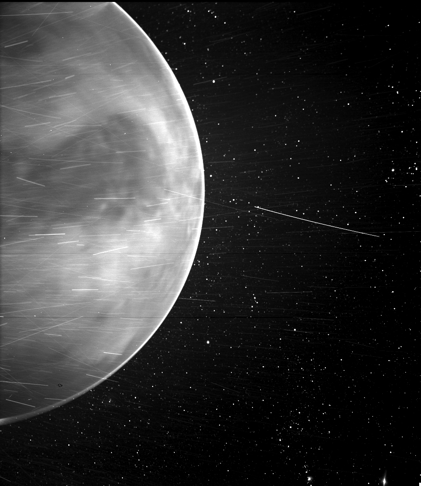

2021年2月25日 来源：NASA
尽管派克太阳探测器的重点是太阳，但金星在任务中起着至关重要的作用：金星在执行七年任务的过程中，用金星的引力弯曲了航天器的轨道，共鞭打了七次。 这些金星重力助力使派克太阳探测器能够以越来越近的距离飞向太阳，以研究其源头附近的太阳风的动力学。 但是，连同轨道动力学一起，这些通行证还可以产生内部太阳系的一些独特的，甚至是出乎意料的视图。在2020年7月11日执行任务的第三次金星重力协助期间， 机载帕克太阳探测器宽视场成像仪（WISPR）从7693英里远处拍摄到了行星夜间的惊人图像。

2020年7月，当飞越金星时，派克太阳能探测器的WISPR仪器（帕克太阳能探测器的宽视场成像仪的缩写）在行星边缘周围发现了一个明亮的边缘，该边缘可能是夜光–大气中高氧原子发出的光在
晚上重组为分子。图像中央突出的深色特征是阿芙罗狄蒂（AphroditeTerra），这是金星表面上最大的高地地区。WISPR中的亮条纹（如此处所示）通常是由带电粒子（称为宇宙射线）造成的，
这些粒子是由太空尘埃颗粒反射的阳光，以及与这些尘埃颗粒撞击后从航天器结构中排出的物质颗粒。条纹的数量沿轨道或航天器以不同速度行进时会有所不同，科学家们仍在讨论条纹的具体来源。
金星下部出现的黑点是WISPR仪器的伪影。
鸣谢：NASA /约翰·霍普金斯APL /海军研究实验室/ Guillermo Stenborg和Brendan Gallagher
由 迈克尔·巴克利 约翰·霍普金斯大学应用物理实验室，劳雷尔，马里兰州。
NASA媒体联系人：卡伦·福克斯（Karen Fox） 美国宇航局的戈达德太空飞行中心 ，马里兰州格林贝尔特